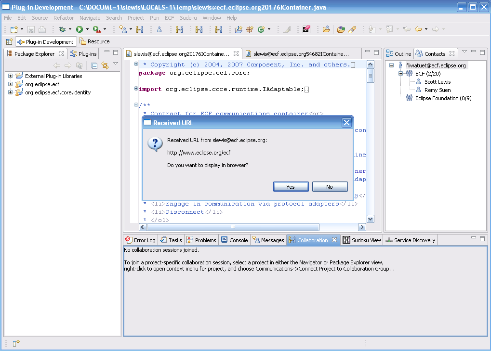

an eclipse technology project
New and Noteworthy
2.0.0 Release
Return to ECF download page
New and Noteworthy for 1.0.0
New and Noteworthy for 1.1.0
New and Noteworthy for 1.2.0

|
eclipse communication framework
an eclipse technology project New and Noteworthy 2.0.0 Release Return to ECF download page New and Noteworthy for 1.0.0 New and Noteworthy for 1.1.0 New and Noteworthy for 1.2.0 |
|
|
Real-Time Shared Editing |
In ECF 2.0.0/Ganymede, we introduce Real-Time Shared Editing that works over public IM protocols like Google Talk/XMPP and Skype. This allows two developers to work collaboratively in real-time to edit source code and/or documents with change conflicts resolved in real time. Usage documentation as well as links to technical documentation and source code are available here. There is also a video showing the usage of the technology available. |
|
Adding Real-Time Shared Editing to Other Text Editors |
It's possible to add real-time shared editing capabilities to other editors, and documentation on how to do this is now available here. |
|
r-OSGi added as ECF Remote Services provider |
We have added an implementation of the ECF remote services API based upon r-OSGi. This implementation allows clients to access and use distributed OSGi services. Remote services may be accessed in either of two ways:
This provider includes consists of two bundles
There is example and test code available for the r-OSGi provider (and the ECF generic provider) available here. |
|
Discovery API |
The discovery API has been simplified and extended. See bug #209774 and the
ECF Discovery API documentation.
IMPORTANT NOTE:The discovery API has undergone a number of simplifications that make it easier to use, but have broken backward compatibility. Applications that have been written to a previous version of the discovery API will have to be changed to use the new API. See the IDiscoveryContainerAdapter class for more information. |
|
ECF Core and Filetransfer plugins added to Eclipse Platform for P2 |
ECF's core (org.eclipse.ecf, org.eclipse.ecf.identity) and filetransfer (org.eclipse.ecf.filetransfer, org.eclipse.ecf.provider.filetransfer, org.eclipse.ecf.ssl, org.eclipse.ecf.provider.filetransfer.ssl) have been added to the Eclipse Platform distribution for usage in P2, the new Equinox Provisioning system. |
| |
|
|
Service Locator Protocol |
We have added a jSLP-based implementation of the ECF discovery API. See bug 200804 for details. |
|
Peer-to-Peer Updatesite Discovery |
There is now an example of using the ECF discovery API for peer-to-peer update site discovery. See here screenshots and for details.. |
|
Peer-to-Peer Remote Services |
There is an example of using the ECF discovery API for peer-to-peer discovery of remote OSGi services. The example remote service (in this case remote access to the EnvironmentInfo Equinox Service) can then be accessed
in several ways:
These access methods are made available via the ECF IRemoteService. Note that the proxy can also be accessed directly in the OSGi service registry via BundleContext.getServiceReference() or a ServiceTracker. In this way, if complete API transparency is desired by the programmer, then the remote service can be transparently accessed. Note also that we currently have provider implementations of the remote services API based upon ECF generic (included in ECF), XMPP (included in ECF), ActiveMQ and BEA Weblogic-based JMS implementations (found here), and a Javagroups-based implementation (found here). We also have a pending contribution of the r-OSGI-based provider, expected to be included in ECF milestone 6 pending Eclipse Foundation IP approval (CQs 2063 and 2064). See here for screen shots and details. |
| |
|
|
URL and Eclipse View sharing |
It's now possible to immediately share URLs and to remotely open Eclipse views via ECF the XMPP/Google Talk and/or Skype providers.
To do so, open the context menu (right click) on the buddy of your choice in the contacts list:

Then the receiver will see a notification like this  And if they accept the request will then see 
The 'Send Show View Request...' has a similar sequence. |
|
Screen Captures sent through IM |
Screen captures can now be made and sent via ECF Datashare API directly to buddies on the users Contacts List. See Screen Captures over IM Wiki Page for more information.
|
| |
|
ECF API Changes |
|
|
FileTransfer API Enhanced |
Added support improvided simplified outgoing file transfer. Added new provider for SCP-based file retrieve (download)
and file send (upload). See documentation for ECF File Transfer API.
|
|
P2/Eclipse Platform used ECF Filetransfer |
ECF's File Transfer API is now being used by the Equinox P2 effort and so along the ECF core plugins are included in the Eclipse SDK (org.eclipse.ecf.*.jar). |
|
Discovery API |
The discovery API has been simplified and extended. See bug #209774 and the
ECF Discovery API documentation.
IMPORTANT NOTE:The discovery API has undergone a number of simplifications that make it easier to use, but have broken backward compatibility. Applications that have been written to a previous version of the discovery API will have to be changed to use the new API. See the IDiscoveryContainerAdapter class for more information. |